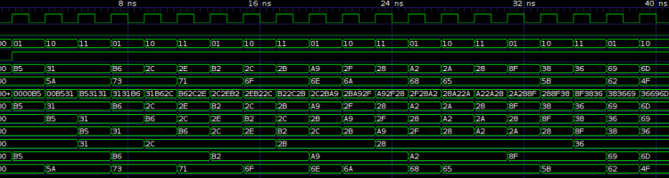
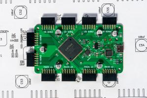
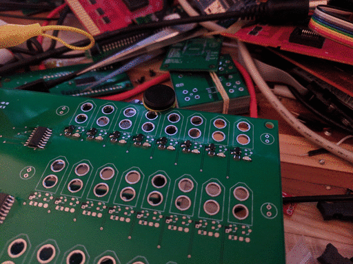
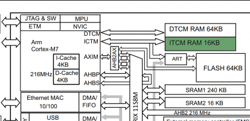

Also on blog.rhye.org

Profiling Android apps with Flamegraphs
TL;DR: I built a tool to turn Android trace output in to flame graphs. You can …

FPGAs for Software Engineers 0: The …
A brief introduction to FPGAs, Verilog and simulation
Cassandra performance in …
TLDR: Use dict_factory instead of named_tuple_factory for …

FPGAs 1: Running on Hardware
End to end instructions for getting started with FPGA development on a simple …

STM32 & OpenCM3 Part 2: SPI and DMA
How to set up SPI for both blocking and non-blocking (DMA) transfers
Respecting the scheduler in Erlang …
Recently, I did a small writeup on creating natively implemented functions …
Thumb vs AVR Performance
The other day, I was working on an embedded application for driving stepper …

STM32 & OpenCM3 4: Memories and Latency
How to improve latency using the linker and ITCM RAM